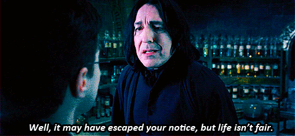
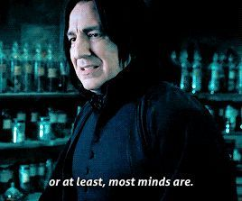
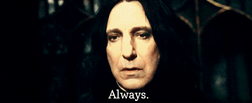
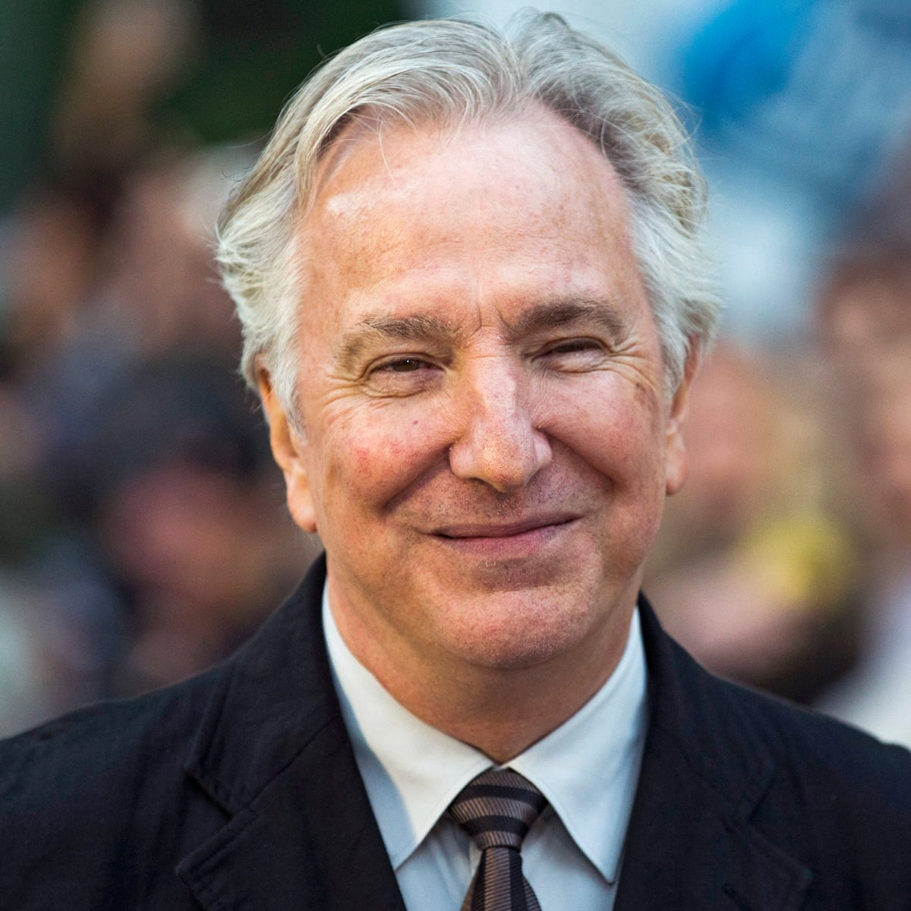
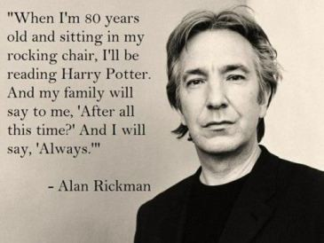

<!DOCTYPE html>
<html>
    <head>
        <meta charset="utf-8">
        <title>PotterScience</title>
        <meta name="description" content="PotterScience">
        <link rel="stylesheet" href="styles.css">
        <link rel="icon" href="star-white.jpg">
    </head>
    
</html>

<body>
    <div class="topnav">
        <a href="index.html"><br>Home</a>
        <a href="facts.html"><br>Facts</a>
        <a href="RantRoom.html"><br>RantRoom</a>
        <a class="active" href="Hogsmeade.html"></a>
      </div>

    <h1 class="Heading1">The Half-blood Prince's Server</h1>
    <P class="pa" style="text-align: center;">Did you know his most powerful sayings?</P>
    <p class="pb">Severus Snape is known as one of the honorable professors in Hogwarts School of Witchcraft and Wizardry. Professor Snape's teaching major is potion, (that's real science, mates!).
        Although in the sixth book and movie, it was revealed from Snape's own quote that he is the half-blood prince who created the Sectum-Sempra spell. He looks and acts both fierce and emotionless,
    which made most of his students think that this Professor is quite scary. Nevertheless, Snape hides a painful and aching memory deep inside, which made him a dark character.
Snape was bullied by the Marauder themselves, and his love of live married the man who bullied him the most. Snape was also hated by most of his fans for his behaviour and his famous action for killing The Great
Dumbledore himself. Nevertheless, he had a reason to do that. Snape was actually replacing Draco for killing Dumbledore by He-Who-Shall-Not-Be-Named's order.
Snape wanted to prevent Draco from feeling guilt and commiting murder to Dumbledore.
However, fans misjudged him. Believe me when I say this half-blood prince deserve better. He is still a gentlewizard who wills to help Harry in Harry's desperate moments.
Here are some favourite "sweet" lines of our Professor Snape!</p>

<div>
   
    <h4 class="slyth">
1. "Well, it may have escaped your notice, but life isn't fair."
    </h4>
    
    <br>
    <p class="robot">This quote of his popped up in Harry Potter and The Goblet of Fire both in the books and its movies. 
    This is a real life experience that Severus Snape had to pass through too. 
    Like we stated, Snape was the most misunderstood characterin the world of Harry Potter. </p>
<br>
<br>
    <h4 class="slyth">
 2. "You have performed extraordinary magic with this wand, my Lord, in the last few hours alone."
    </h4>
   
    <p class="robot">Tis sweet, but not for anyone in the world ecxept the Death Eaters and their Lord himself.
    Snape quoted this in Harry Potter and The Deathly Hallows, which is part II in the movies.
    Snape was working as a spy between the Death Eaters under his association with Dumbledore.</p>
<br>
<br>

<h4 class="slyth">
3. "You’ve kept him alive so that he can die at the proper moment."
</h4>
<p class="robot">It was his saying towards Dumbledore, it was the shock that grew for each letters when you read from it.
    And it was each seconds when you here from it.
    Here's a clip from the previous saying in Harry Potter and The Deatly Hallows book;
    "Dumbledore opened his eyes. Snape looked horrified.
    “You have kept him alive so that he can die at the right moment?”
    “Don’t be shocked, Severus. How many men and women have you watched die?”
    “Lately, only those whom I could not save,” said Snape. He stood up. “You have used me.”
</p>
<br>
<br>

<h4 class="slyth">
4. "The mind is not a book to be opened at will and examined at leisure."
</h4>

<br>
<p class="robot">This one is literally meaningful, mate. This saying appeared in the series of Order of The Phoenix.
</p>
<br>
<br>

<h4 class="slyth">
    5. "Always."
</h4>

<br>
<p class="robot">One word of my personal favourite quote. Tis more than a word of six letters, and more than a second or two range of time statement.
Here is the clip also from the previous book (Harry Potter and The Deathly Hallows) of Snape's and Dumbledore's convo;
    Said Snape. He stood up. “You have used me.”
    “Meaning?”
    “I have spied for you and lied for you, put myself in mortal danger for you. Everything was supposed to be to keep Lily Potter’s son safe. Now you tell me you have been raising him like a pig for slaughter--”
    “But this is touching, Severus,” said Dumbledore seriously. “Have you grown to care for the boy, after all?”
    “For him?” shouted Snape. “Expecto Patronum!”
    From the tip of his wand burst the silver doe: She landed on the office floor, bounded once across the office, and soared out of the window. Dumbledore watched her fly away, and as her silvery glow faded he turned back to Snape, and his eyes were full of tears.
    “After all this time?”
    “Always,” said Snape.
</p>
<br>

    <div class="robot">
        <p>
        Some characters are better than actors, but this one is more than an equal to Severus Snape.
        </p>
        
        <p>Meet Alan Rickman! The one and only Severus Snape! Trust me, NO ONE CAN EVER REPLACE HIM.
        Those who grew with him from the movies will always remember him as a great true gentleman.
        Rickman himself also has a great quote that will always be reckon by friends, families, and fans:
        </p>
        
        <p>
        "When I'm 80 years old and sitting on my rocking chair, I'll be reading Harry Potter. And my family will say to me, 'After all this time?'
        And I will say, 'Always.'"
        </p>
        <p>Unfortunately, before Sir Alan Rickman reach his 80 years old, he passed away in London, 14th of January, 2016. May he rest in peace, and may us always remember him and his greatness.</p>
    </div>
</div>
</body>